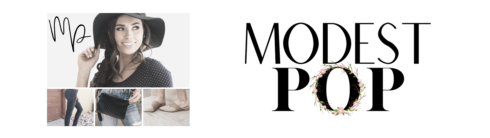

As a "creative" it's taken some years of exploration to find an industry that I will be happy to build a career in, just like many others I suppose. What compels me the most about a career as a Web Developer and Graphic Designer is the combine use of design and technology to create visually stunning tools and websites for our modern society. I worked at Verizon Wireless during the boom of the smartphone and have seen first hand the strides that technology has made and that experience has instilled in me a passion for quality online content.
This project was challenging but such a great experience for me. My client Stephanie Jaggi had specific colors, and style in mind for her online branding graphics. The image of the woman with flowers in her hair is hand drawn to meet the orignality of my clients brand. The floral custer and fonts were all indivdually grouped together to create a custom arrangement.
I created this short ad to play on social media for NLCDA. This was a fun project I did to demonstrate in my interview that I could be a great asset to the company with future marketing projects.
I created a couple of company logos and and mailer post card for my client Camille. This project was an amazing learning experience in working from the ground up on a branding design. Branding concepts evolved overtime until the final design conveyed the correct message.
| First Name | Last Name | Title | Company Website |
|---|---|---|---|
| Stephanie | Jaggie | Small Bussiness Owner/ Cosmetoligist | Blossom Hair by Steph |
| Chip | Winch | HR/Marketing | Northridge Learning Center/ Dorius Academy |
| Camille | McConnell | CEO | Modest Pop |